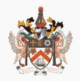

Saint Kitts y Nevis
|  |
Nombre oficial: San Cristóbal y Nevis
Área: 261,6 km²
Costas: 135 km
División política:14 parroquias administrativas
- Parroquias de San Cristóbal:
- Christ Church
- Nichola Town
- Saint Anne Sandy Point
- Saint George Basseterre
- Saint John Capisterre
- Saint Mary Cayon
- Saint Paul Capisterre
- Saint Peter Basseterre
- Saint Thomas Middle Island
- Trinity Palmetto Point
- Parroquias de Nevis:
- Saint George Gingerland
- Saint James Windward
- Saint John Figtree
- Saint Paul Charlestown
- Saint Thomas Lowland
Unidad monetaria: Dólar Caribe-Este
1 Dólar Caribe-Este = 100 centavos
Idiomas: Inglés (oficial); hindi (no oficial)
Fiesta nacional: 19 de septiembre, Día de la Independencia
Gentilicio: de San Cristóbal y Nevis
Hora oficial: GMT -4 horas (normal/verano)
Miembro de: ONU, Commonwealth, CARICOM, OEA
Curiosidades
La isla de San Cristobal tiene 37 km de largo y 8 de ancho. La isla de Nevis es realtivamente circular y consiste casi en su totalidad en una montaña, el Nevis Peak de 985 m de altura, flanqueada por dos grandes colinas.
Perfil
Ecónomico
Perfil Demográfico
Población: 46.710 hab.
Densidad de población: 148 hab/km²
Perfil Cultural
Alfabetismo: 98%.
Religión:
- Protestantes: 49,5%
- Anglicanos: 34,5%
- Católicos: 9,0%
- Otros: 7,0%
Sistema de Gobierno
Constitución vigente: 19 de septiembre de 1983
Sistema ejecutivo: Monarca británico (Jefe de Estado, representado por el Gobernador General), Primer Ministro (Jefe de Gobierno), Gabinete (responsable ante la Asamblea Nacional).
Sistema legislativo: Asamblea Nacional (once miembros electos por cinco años y cuatro nominados, no electivos).
Aproximación histórica
El país formado por dos islas caribeñas rinde homenaje con su nombre al navegante Cristóbal Colón que las descubre en 1493.
Los fundadores de la primera colonia inglesa en 1623 abrevian su nombre a Saint Kitts.
Tras un breve intento de colonización francesa en 1627, los ingleses se establecen en Nevis en 1628. El enfrentamiento entre las dos potencias coloniales se resuelve en 1713, cuando el Tratado de Utrecht establece la soberanía inglesa.
Entre 1958 y 1962 San Cristóbal, Nevis y Anguila participan en la Federación de las Islas Occidentales, bajo el dominio británico.
En 1967 las islas se convierten en un Estado Libre Asociado al Reino Unido. En el mismo año Anguila se rebela contra San Cristóbal, provocando la intervención de las tropas británicas. Anguila se separa definitivamente en 1980 y regresa a la condición de colonia británica. La independencia total de San Cristóbal y Nevis es declarada en 1983.
«-- ir al comienzo
«-- regresar